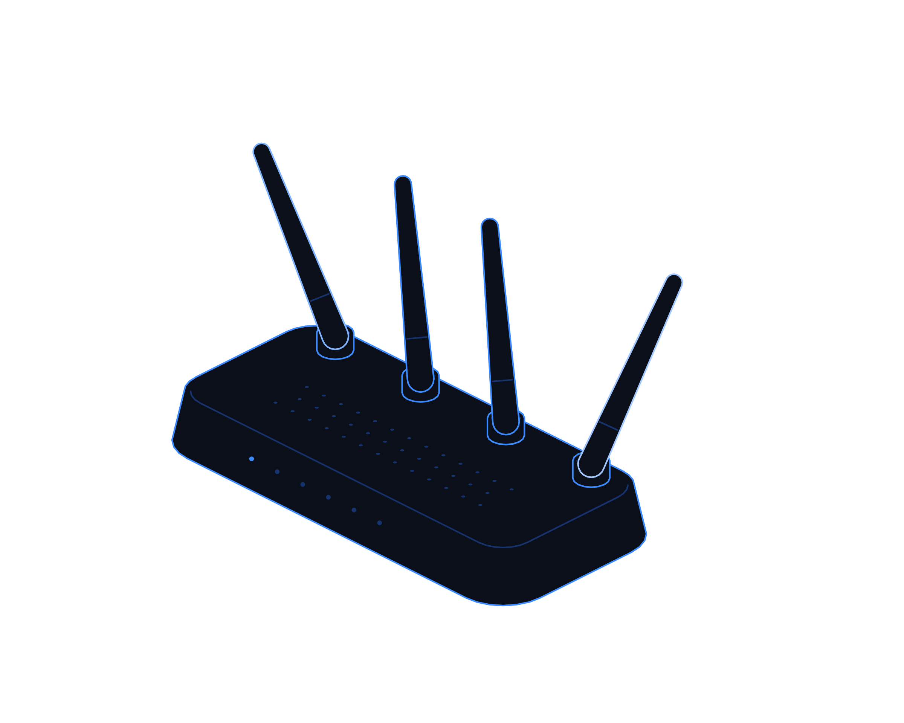

Lock the Front Door


Hot topics · Playbook
No. 01 · November 2026
Hot topics · Edge-device security
Lock the
front door.
Firewalls, VPNs and gateways are now where attackers start. A practical playbook for finding, hardening and watching the devices that face the internet.
Transputec playbooktransputec.com
Inside
Contents
A practical guide to securing firewalls, VPNs and other internet-facing devices: what to check this week, what to fix this month and what to change this quarter.
Foreword03
Introduction04
01Know your edge06
02Harden the edge11
03When it goes wrong17
 Contents
ContentsLock the Front Door · Hot Topics · Playbook02 / 24
Foreword
Your firewall was meant to keep attackers out. Increasingly, it is how they get in.
In October 2026 the FBI and the US Secret Service warned that a campaign known as FortiBleed was still taking over Fortinet firewalls and VPN gateways around the world, in some cases locking owners out of their own devices. The same month, attackers chained three previously unknown flaws to break into fully patched Ivanti VPN appliances, and several other edge vendors issued urgent fixes.
None of this needed a clever phishing email or a careless click. Attackers went straight for the devices that sit on the boundary of the network, because those devices are reachable from anywhere, hold the keys to everything behind them and are often the least watched systems an organisation owns.
This playbook is about closing that gap. It is written for UK IT leaders and the people who manage their networks, and it focuses on practical steps: know what you expose, harden it, watch it and be ready to act fast when something goes wrong. Our companion intelligence report sets out the full evidence.
The Transputec team
Transputec
Foreword Lock the Front Door · Hot Topics · Playbook03 / 24
Introduction
Three habits keep the front door locked.
Most edge-device compromises come down to a handful of familiar gaps. The organisations that avoid them are not the ones with the most expensive kit. They are the ones that know what they have, keep it current and watch it closely.
Know every door
Keep a complete, current list of every device and service you expose to the internet, with a named owner for each.
Harden what you keep
Take management off the internet, enforce phishing-resistant MFA, patch exploited flaws in days and retire kit before it goes out of support.
Watch and be ready
Send logs off the device, alert on new accounts and changes, and rehearse how you would regain control if locked out.
Introduction Lock the Front Door · Hot Topics · Playbook04 / 24
A patch cannot fix a password that has already leaked.
FortiBleed used no new vulnerability. Attackers simply logged in. Securing the edge means credentials, access and monitoring, not just updates.
Introduction Lock the Front Door · Hot Topics · Playbook05 / 24
01
Part 01
Know your
edge.
You cannot protect a door you do not know is there. Start with a complete picture.
01Why the edge is the target
02What attackers want from it
03Building the inventory
Part 01 Lock the Front Door · Hot Topics · Playbook06 / 24
Know your edge
Why attackers knock on the front door first
An attacker who controls the VPN gateway does not need to trick anyone. They are already inside.
Every organisation has a boundary between its own network and the internet. On that boundary sit firewalls, VPN gateways, remote access portals, email gateways and routers. They are designed to be reachable from outside, which is exactly what makes them attractive.
An edge device is trusted by everything behind it. It handles staff logins, sees authentication traffic and often connects directly to the directory that controls every account. An attacker who controls the VPN gateway does not need to trick anyone. They are already inside.
These devices are also hard to watch. Most cannot run the endpoint protection that guards laptops and servers. Logs often stay on the device, where an intruder can delete them. In the October Ivanti attacks, the intruder left no malware at all and erased log entries as it went.
Attackers have turned this into an industry. Automated scanners find exposed devices within hours of a flaw being published. Campaigns like FortiBleed test leaked passwords against tens of thousands of gateways and sell working access to ransomware groups.
The fixes are not exotic. They are inventory, patching, strong authentication, restricted management, central logging and timely replacement. What makes them hard is ownership: edge devices often sit between the network team, the security team and an outside supplier, and each assumes another has it covered.
So the first job is simple. Find every door, and give each one an owner.
Know your edge Lock the Front Door · Hot Topics · Playbook07 / 24
What is at stake
Four things attackers want from your edge
Knowing the prize tells you what to protect first.

01
Credentials
Admin and VPN passwords, and the logins passing through, harvested and cracked.
02
A foothold
A hidden admin account that survives a simple password change.
03
A route inward
From the gateway to the directory, file shares and privileged accounts.
04
Something to sell
Working access sold on to other criminals, including ransomware groups.
Know your edge Lock the Front Door · Hot Topics · Playbook08 / 24
This week
Build your edge inventory in five steps
A spreadsheet is fine to start. Completeness matters more than tooling.
01
List what you think you have
Firewalls, VPNs, remote desktop gateways, email gateways, load balancers, routers and any cloud-hosted equivalents.
02
Check what the internet can see
Register for the NCSC's free Early Warning service and compare its view, and an external scan, with your list.
03
Record the essentials
For each device: owner, vendor, model, software version, support end date, who can manage it and from where.
04
Find the strays
Old test gateways, a supplier's remote access box, a branch office router. The forgotten device is usually the one that gets used.
05
Agree an owner and a review date
Every device gets a named person, and the list is reviewed monthly.
Remember
If a device is on the internet and nobody owns it, switch it off or put someone in charge of it today.
Know your edge Lock the Front Door · Hot Topics · Playbook09 / 24
What to check
Device by device: the questions that matter
Use this as the column headings for your inventory.
Check
What to look for
Red flag
Version
Running a supported release with the latest security fixes.
More than one critical fix behind, or no longer supported.
Management
Admin access only from trusted internal hosts or a jump box.
Admin login page reachable from the internet.
Accounts
Named admin accounts, each with phishing-resistant MFA.
Shared admin logins, unknown accounts or support-style names.
Credentials
Passwords rotated, stored using the vendor's strongest method.
Passwords unchanged for years or reused elsewhere.
Logging
Logs sent to a central system and reviewed.
Logs held only on the device, or not kept at all.
Lifecycle
Support end date known, replacement budgeted.
End of support within a year with no plan.
Know your edge Lock the Front Door · Hot Topics · Playbook10 / 24
02
Part 02
Harden
the edge.
Reduce what attackers can reach, and make what remains hard to use.
01Six hardening rules
02Patching at the speed of attack
03From VPN to zero trust
Part 02 Lock the Front Door · Hot Topics · Playbook11 / 24
Hardening
Six rules for every internet-facing device
These come straight from the NCSC, CISA, FBI and vendor guidance issued during 2026.
01
Take management off the internet
Allow admin access only from trusted hosts or an internal network. If you can remove internet administration entirely, do.
02
Phishing-resistant MFA on every login
Every VPN user and every administrator, including service and break-glass accounts, using hardware keys or passkeys where supported.
03
Rotate and strengthen credentials
Unique admin passwords, rotated after any suspicion of compromise, stored with the vendor's strongest hashing option.
04
Patch exploited flaws in days
When a vendor or CISA flags active exploitation, treat it as an incident, not a maintenance task.
05
Log off the device
Send firewall, VPN and authentication logs to a central system and alert on new accounts and configuration changes.
06
Replace before end of support
Unsupported kit gets no fixes. Plan replacement at least a year ahead.
Harden the edge Lock the Front Door · Hot Topics · Playbook12 / 24
Patching
From advisory to verified fix
A simple sequence for exploited edge-device flaws. Aim to complete it within days, not weeks.
Hear about it
Subscribe to vendor security advisories, the NCSC and CISA's Known Exploited Vulnerabilities list for every product in your inventory.
Check exposure
Confirm which devices run affected versions and whether the vulnerable feature is enabled and reachable.
Fix or mitigate
Apply the vendor's fix. If you cannot yet, apply its mitigation and restrict access to the affected service.
Look for compromise
Run vendor integrity tools and check logs for new accounts or odd activity. A clean scan is not proof.
Verify and record
Confirm the new version is live, record the date and note any follow-up upgrade the vendor announces.
In October, Ivanti customers who patched once had to upgrade again two weeks later. Always check for follow-up fixes.
Harden the edge Lock the Front Door · Hot Topics · Playbook13 / 24
Move from VPN to zero trust access
A traditional VPN puts a remote user on the network. Zero trust access connects them to one application at a time, after checking who they are and the health of their device.
Why it helps
Fewer exposed gateways and less to steal. A stolen login reaches one application, not the whole network.
Where to start
Move the most-used applications first, such as email, files and line-of-business web apps, using your identity platform.
What stays
Some systems still need network access. Keep a smaller, hardened VPN for those, with MFA and tight rules.
What to measure
Number of internet-facing gateways, share of users off the VPN, and time to revoke access for a leaver.
Owner
Head of IT, with the security lead
Bring this to the monthly review, with a date for each action.
Harden the edge Lock the Front Door · Hot Topics · Playbook14 / 24
Lifecycle
Keep, harden, plan or replace
Plot each edge device by support status and exposure. Act on the top right first.
Plan replacement
Near end of life, internal only
Budget now and replace within the year. Keep it patched and monitored meanwhile.
Replace now
Near end of life, internet-facing
No fixes are coming. Remove exposure or replace this quarter.
Maintain
Supported, internal only
Keep current, keep logging and review access annually.
Harden and watch
Supported, internet-facing
Apply the six rules and patch exploited flaws within days.
Internet exposure →
↑ Support risk
Harden the edge Lock the Front Door · Hot Topics · Playbook15 / 24
In practice
Three organisations, three edges
Professional services firm, 150 staff
One firewall, one VPN, one supplier
The gap
Admin page open to the internet so the supplier could manage it remotely.
The fix
Management restricted to the supplier's fixed address via a jump host, with MFA on every admin account.
The check
An external scan confirms the admin page is no longer visible.
Watch out
Ask the supplier how they protect their own access and who on their team can log in.
Multi-site distributor
Branch routers nobody remembered
The gap
Three old branch routers past end of support, with default community strings.
The fix
Replaced with supported kit managed centrally, legacy protocols such as Telnet and SNMP v1 and v2 disabled.
The check
Inventory reconciled with Early Warning alerts every month.
Watch out
Shipping kit to branches takes time. Order early.
Housing association
VPN for 600 remote staff
The gap
Password-only VPN logins and logs kept only on the appliance.
The fix
Phishing-resistant MFA for all users, logs sent to a monitored central system, top apps moved to zero trust access.
The check
Alert fires on any new admin account within minutes.
Watch out
Plan support for staff enrolling new authenticators.
Harden the edge Lock the Front Door · Hot Topics · Playbook16 / 24
03
Part 03
When it
goes wrong.
Assume one day a device will be compromised. Decide now how you will respond.
01Incident steps
02Questions for suppliers
03Your 90-day plan
Part 03 Lock the Front Door · Hot Topics · Playbook17 / 24
Incident response
If an edge device is compromised
Based on NCSC and FBI guidance. Changing passwords alone may not remove an attacker.
Isolate
Cut the device off from the internet and the internal network, using a pre-agreed fallback for remote staff.
Preserve evidence
Collect logs, configuration and other artefacts before any reset, because a factory reset destroys them.
Report and get help
Report the incident through the UK's official reporting routes, tell the vendor and consider an NCSC-assured incident response provider.
Reset and rebuild
Factory reset, install the latest supported version, restore from a known-good configuration and issue new credentials and keys.
Hunt for onward access
Check other devices that shared credentials, review directory and server logs, and reset accounts the device could see.
Locked out? Keep an offline, out-of-band way to regain admin control, and test it before you need it.
When it goes wrong Lock the Front Door · Hot Topics · Playbook18 / 24
Supplier questions
Six questions for your network and security suppliers
Many edge devices are managed by a third party. Their standards are your standards.
Who can log in?
Which named people can manage our devices, from where, and is every login protected by phishing-resistant MFA?
How fast do you patch?
What is your target time to fix an actively exploited flaw on our edge devices, and how do you report it?
Where do the logs go?
Are device logs sent off the appliance, retained and reviewed, and who alerts us to new accounts or changes?
What is going end of life?
Which of our devices lose vendor support in the next 18 months, and what is the replacement plan?
Also ask: if a device is compromised, who isolates it, who preserves evidence and how fast can you rebuild it?
When it goes wrong Lock the Front Door · Hot Topics · Playbook19 / 24
Your plan
This week, this month, this quarter
Owners are suggestions. Adjust them to your structure.
This week
Inventory internet-facing devices. Register for Early Warning. Remove internet admin access. Check for unknown accounts.
Network lead
This week
Reset admin and VPN passwords on any device in doubt. Confirm MFA on every VPN and admin login.
Security lead
This month
Bring every edge device to a supported, current release. Send logs to a central system and set alerts.
Network lead
This month
Ask suppliers the six questions. Write and test the isolate, preserve, rebuild procedure.
Head of IT
This quarter
Replace end-of-life kit. Move first applications to zero trust access. Rehearse a lockout scenario.
Head of IT
This quarter
Report progress to the board with dated actions and remaining risks.
IT director
When it goes wrong Lock the Front Door · Hot Topics · Playbook20 / 24
For leaders
Questions for your leadership team
Ask them out loud. Vague answers are the finding.
Exposure
?Do we know every device we expose to the internet, and who owns each one?
?Can anyone manage our firewall or VPN from the internet today?
?Which edge devices go out of support before the end of next year?
Readiness
?How quickly did we fix the last actively exploited edge flaw?
?If our firewall locked us out tonight, how would we regain control?
?Do our suppliers meet the same standard we set for ourselves?
When it goes wrong Lock the Front Door · Hot Topics · Playbook21 / 24
Checklist
Is your front door locked?
Tick what is true today. Anything blank is your next action.
Complete inventory of internet-facing devices
With an owner, version and support date for each.
Registered for NCSC Early Warning
And alerts go to someone who acts on them.
No management interfaces reachable from the internet
Admin access only from trusted hosts.
Phishing-resistant MFA on every VPN and admin login
Including service and supplier accounts.
Exploited edge flaws fixed within days
With a check for compromise afterwards.
Logs sent off the device and monitored
Alerts on new accounts and configuration changes.
Tested plan to isolate, preserve and rebuild
Including how to regain control if locked out.
No unsupported edge kit in service
Or a dated plan to replace it.
When it goes wrong Lock the Front Door · Hot Topics · Playbook22 / 24
Glossary
Words worth knowing
Edge device
Hardware or software on the network boundary, such as a firewall, VPN gateway, router or email gateway.
VPN
A virtual private network that connects remote users to the internal network.
Management interface
The admin login used to configure a device. It should never face the internet.
Phishing-resistant MFA
Sign-in using hardware keys or passkeys that cannot be phished like codes or push prompts.
Credential stuffing
Trying passwords leaked from other breaches against your logins.
Zero-day
A flaw attackers use before the vendor has a fix.
End of life
When a vendor stops issuing security fixes for a product.
Zero trust access
Connecting users to individual applications after checking identity and device, not to the whole network.
Early Warning
A free NCSC service that alerts UK organisations to exposed vulnerabilities and signs of compromise.
Out-of-band access
A separate, secure way to reach a device if normal access is lost.
Glossary Lock the Front Door · Hot Topics · Playbook23 / 24
Want a second pair
of eyes on your edge?
Transputec helps UK organisations find every exposed device, harden firewalls and VPNs, monitor them around the clock and respond fast when something goes wrong.
Book an edge security reviewtransputec.com
Read the companion report
Companion report: The edge is the breach. FortiBleed, the Ivanti zero-days and what the evidence shows.
Transputec · Hot Topics · No. 01